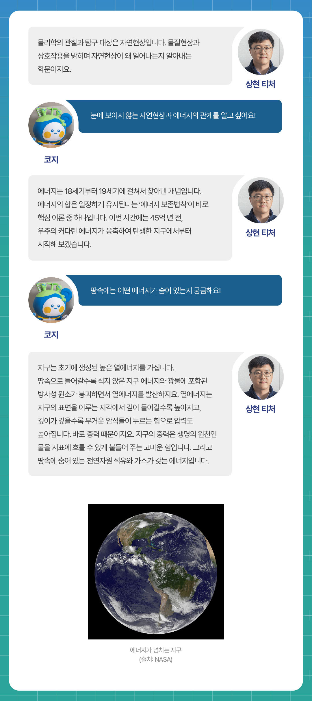
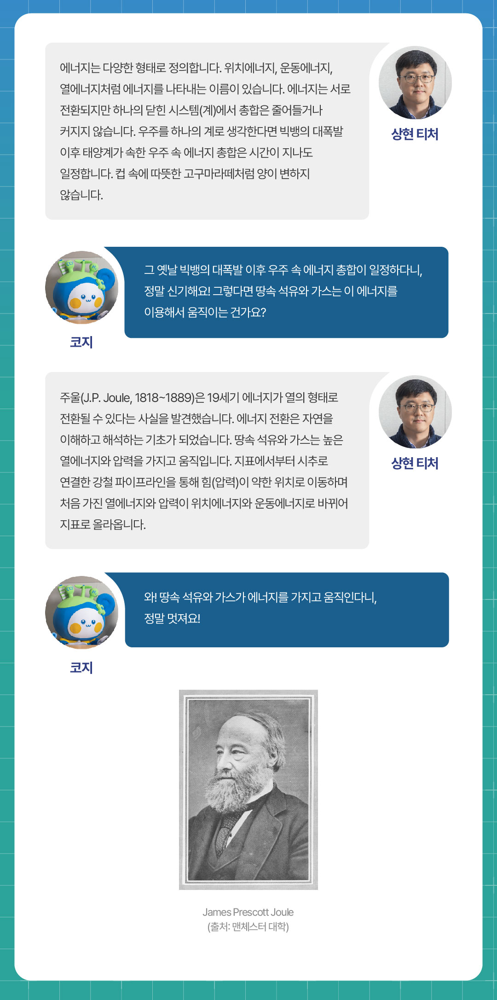
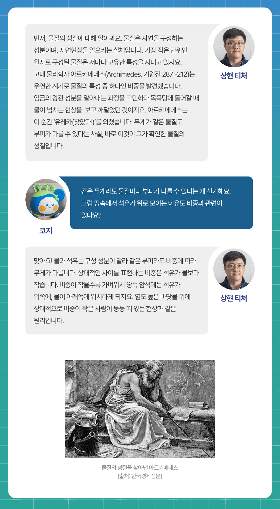
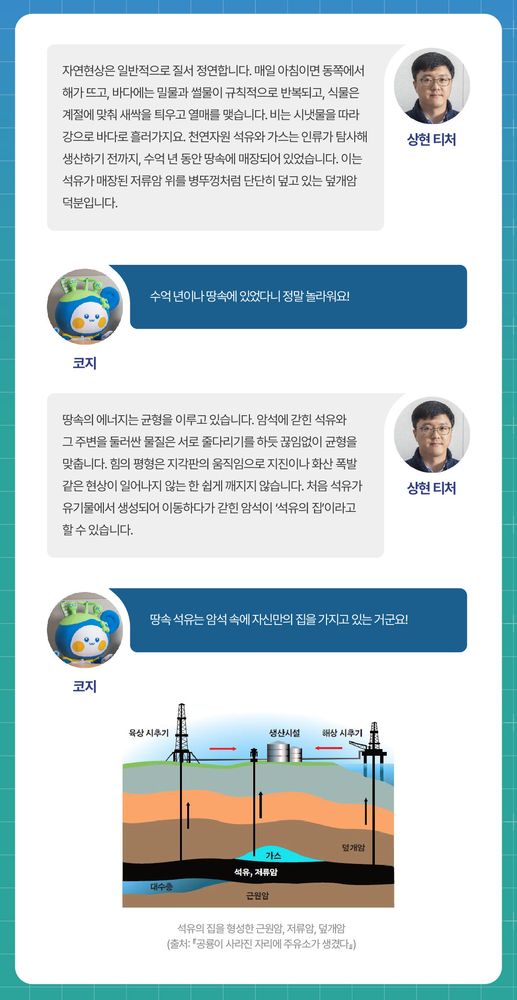
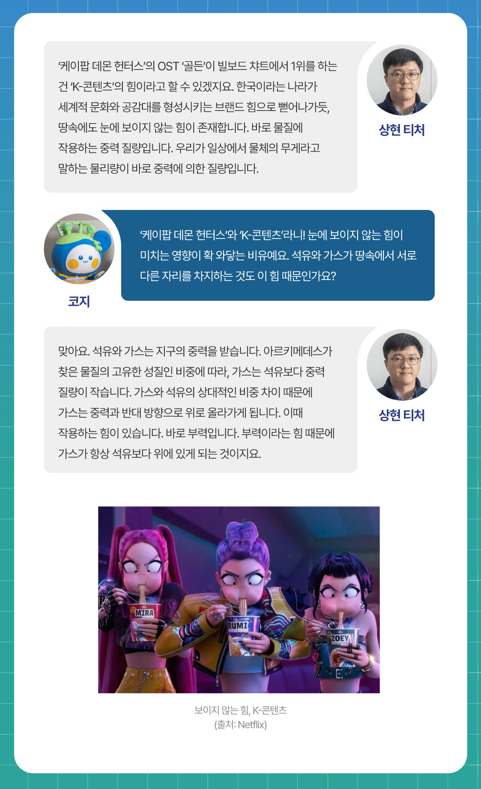
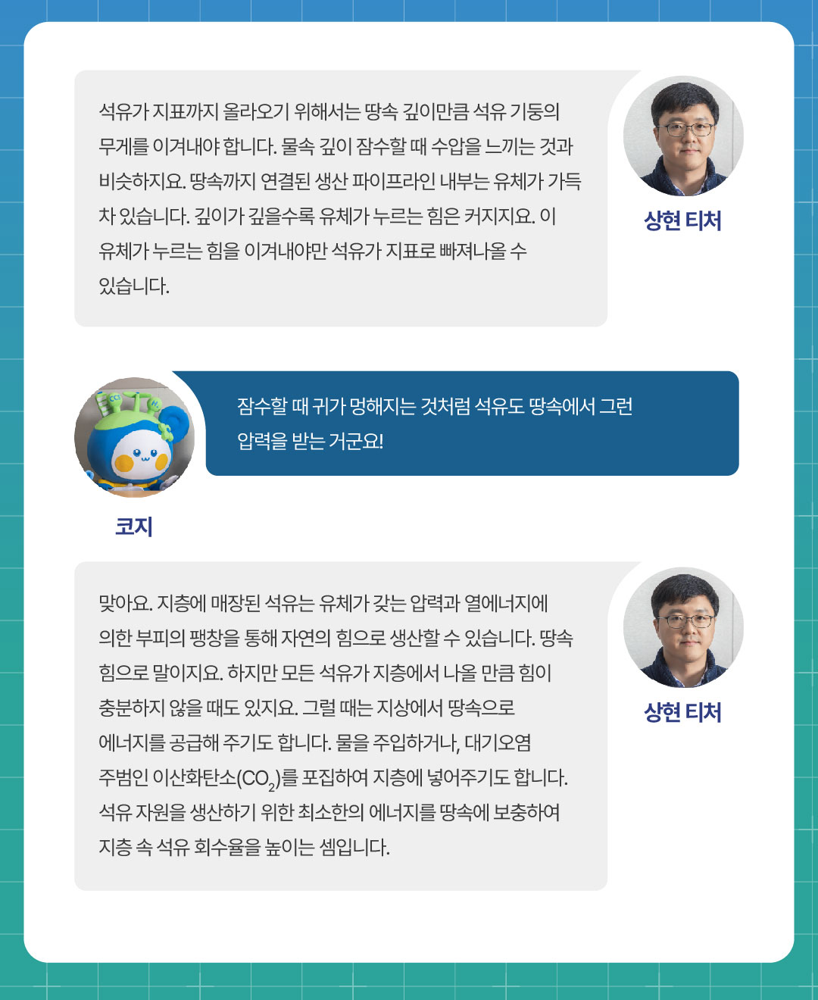
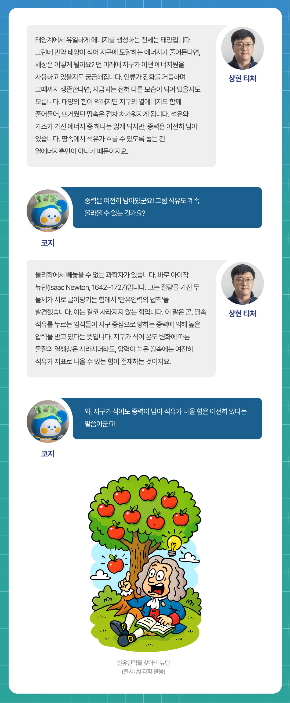

지난 시간에는 ‘화학편 ? 석유와 천연가스 이야기’를 통해, 석유와 가스가 어떤 성분으로 이루어져 있고, 서로 어떻게 다른지 상현 티처와 함께 살펴보았습니다. 이번 시간은 <물리학편-석유와 땅속 에너지>입니다. 지구 내부는 뜨거운 열과 어마어마한 압력이 지배하는 세계입니다. 바로 이 보이지 않는 힘들이 석유와 가스의 흐름을 결정짓고, 우리가 자원을 뽑아낼 수 있도록 돕는 동력이 되지요. 석유와 가스가 어떻게 자리 잡고 이동하는지 한층 더 선명하게 이해하기 위해, 석유와 에너지의 관계를 들여다봅니다. 상현 티처와 함께, 땅속 깊은 곳을 지배하는 에너지의 세계로 들어가 볼까요?
Q1. 땅속 에너지를 물리학으로 설명할 수 있나요?

Q2. 에너지는 종류가 다양하잖아요! 어떤 에너지들이 석유와 가스를 움직이게 하나요?

Q3. 석유는 물보다 가볍다던데, 그래서 물 위에 둥둥 뜨는 기름방울처럼 땅속에서도 위로 모이게 되는 건가요?

Q4. 지난 지구과학 1편에서 근원암과 저류암, 덮개암에 대해 배웠죠! 석유가 바위 속에 갇혀 빠져나오지 못하도록 붙잡는 힘도 있는 건가요?

Q5. 석유와 가스가 지구 속에서 위아래로 서로 다른 자리를 차지하는 건 어떤 힘 때문인가요?

Q6. 우리가 석유를 뽑아낼 수 있는 것도 결국 땅속에 있는 힘을 이용하는 건가요?

Q7. 먼 미래에 지구가 나이를 먹어 땅속의 힘이 약해지면, 석유는 더 이상 밖으로 나오지 못하게 되나요?

오늘은 상현 티처와 함께 <물리학편 ? 석유와 땅속 에너지>를 알아보았습니다. 눈에 보이지 않는 힘들이 어떻게 석유와 가스를 움직이고, 또 우리 삶과 연결되는지 생각해보니 무척 신비로웠는데요! 다음 ‘알쓸유잡 시즌2’에서는 또 어떤 흥미로운 석유 이야기가 펼쳐질지, 벌써부터 기대됩니다. 앞으로도 많은 관심 부탁드립니다.

아래의 카드를 클릭해보세요!
땅속 석유와 가스는 어떤 힘으로 움직이나요?
석유와 가스는 열에너지와 압력을 이용해 움직입니다. 파이프라인을 통해 압력이 약한 위치로 이동하며, 열에너지와 압력이 위치에너지와 운동에너지로 바뀌어 지표로 올라옵니다.
석유와 가스는 왜 땅속에서 위치가 다를까요?
비중 차이로 가스는 석유보다 중력 질량이 작습니다. 가벼운 가스는 위로, 무거운 석유는 아래로 모이지요. 이때 부력이 가스를 위로 밀어 올립니다.
먼 미래에 지구가 식으면 석유도 계속 나올 수 있을까요?
지구가 식어 열에너지가 줄어도, 땅속 석유는 여전히 압력을 받습니다. 중력이 남아 있어, 여전히 석유가 지표로 나올 수 있는 힘이 존재하는 것이지요.